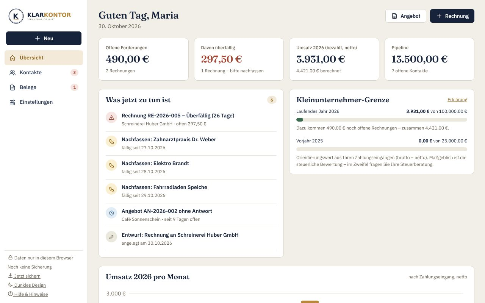
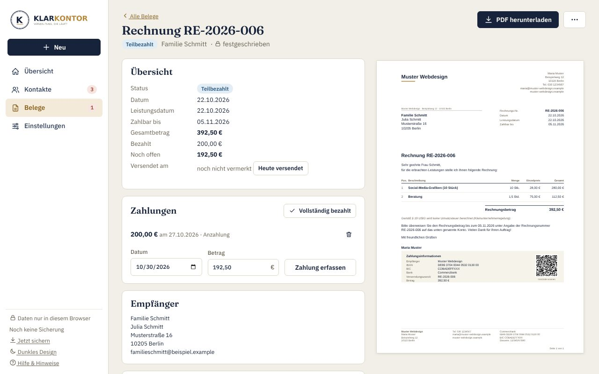

Vom ersten Kontakt bis zur bezahlten E-Rechnung.
Kundenpipeline, Angebote und Rechnungen für Kleinunternehmer und Freelancer – ohne Abo, ohne Konto, ohne Cloud. Ihre Daten bleiben in Ihrem Browser.
Keine Registrierung · keine Installation · funktioniert auch offline

- XRechnung & ZUGFeRD
- GiroCode auf jeder Rechnung
- Daten bleiben bei Ihnen
- Kostenlos, ohne Abo
Ein Ablauf statt fünf Tools
Andere Programme fangen bei der Rechnung an. Klarkontor beginnt beim ersten Kontakt – und hört erst auf, wenn das Geld da ist.
Kontakt festhalten
Interessenten im Pipeline-Board von „Neu“ bis „Kunde“ schieben. Wiedervorlagen erinnern ans Nachfassen.
Angebot schicken
Direkt aus dem Kontakt, mit Live-Vorschau. Festschreiben vergibt die Nummer, das PDF ist sofort fertig.
Rechnung stellen
Angenommenes Angebot per Klick in eine Rechnung umwandeln – als PDF mit GiroCode oder als E-Rechnung.
Bezahlt
Zahlungen erfassen, Überfälliges sehen, Erinnerung und Mahnung mit Zinsen und Pauschale erzeugen.
Alles, was ein kleiner Betrieb wirklich braucht
Nicht mehr, nicht weniger. Gemacht für Kleinunternehmer nach § 19 UStG – Regelbesteuerung mit 19 % und 7 % geht genauso.
Angebote & Rechnungen
Echte PDFs nach DIN 5008 mit Ihrem Logo, Rabatten, mehreren Steuersätzen und lückenlosen Nummernkreisen.
E-Rechnung inklusive
XRechnung 3.0 als XML und ZUGFeRD-PDF – geprüft gegen die europäische Norm EN 16931, mit Pflichtfeld-Check vor dem Export.
GiroCode
Ein QR-Code auf jeder Rechnung: Ihre Kunden scannen ihn mit der Banking-App – Betrag und Verwendungszweck sind schon ausgefüllt.
Kunden-Pipeline
Kontakte, Verlauf, Auftragswert und nächste Schritte. Die Übersicht sagt Ihnen jeden Morgen, wen Sie anrufen sollten.
Kleinunternehmer-Grenze
Behalten Sie die Umsatzgrenzen von 25.000 € und 100.000 € im Blick, bevor es teuer wird.
Export für die Steuerberatung
Einnahmen und Rechnungsübersicht als CSV – direkt in Excel, LibreOffice oder für die EÜR.
Die E-Rechnung kommt. Sie sind vorbereitet.
Rechnungen zwischen Unternehmen werden in Deutschland schrittweise elektronisch. Klarkontor erzeugt beide gängigen Formate – Sie entscheiden je Kunde.
- Seit 2025Alle Unternehmen müssen E-Rechnungen empfangen können.
- Ab 2027Unternehmen mit mehr als 800.000 € Vorjahresumsatz müssen E-Rechnungen ausstellen.
- Ab 2028Die Pflicht gilt für alle Rechnungen zwischen inländischen Unternehmen.
Kleinunternehmer sind vom Ausstellen ausgenommen – viele Geschäftskunden wünschen sich E-Rechnungen trotzdem, weil ihre Buchhaltung sie automatisch verarbeitet. Keine Rechtsberatung; bitte prüfen Sie Ihre Pflichten mit Ihrer Steuerberatung.

Ihre Daten gehören Ihnen.
- Kein Konto, kein Server: Kontakte und Rechnungen werden nur im Speicher Ihres Browsers abgelegt.
- Keine Tracker, keine Cookies: Auch Schriften und Bilder werden nicht von Dritten geladen.
- Offline nutzbar: Einmal geöffnet, funktioniert Klarkontor auch ohne Internet und lässt sich wie eine App installieren.
Ehrlich gesagt
„Nur im Browser“ heißt auch: Löschen Sie Ihre Browserdaten oder wechseln Sie das Gerät, sind die Daten weg. Klarkontor erinnert Sie deshalb regelmäßig an eine Sicherung – eine einzige Datei, die Sie auf jedem Gerät wieder einspielen können.
Häufige Fragen
Was kostet Klarkontor?
Nichts. Es gibt kein Abo und keine Registrierung.
Wo werden meine Daten gespeichert?
Ausschließlich im lokalen Speicher Ihres Browsers auf Ihrem Gerät. Über „Sicherung herunterladen“ erhalten Sie jederzeit eine Datei mit allen Daten.
Kann ich auf mehreren Geräten arbeiten?
Ja, über die Sicherungsdatei: auf Gerät A herunterladen, auf Gerät B einspielen. Eine automatische Synchronisierung gibt es bewusst nicht, weil dafür ein Server nötig wäre.
Sind die Rechnungen rechtssicher?
Klarkontor prüft vor dem Festschreiben die wichtigsten Pflichtangaben, vergibt fortlaufende Nummern und sperrt ausgestellte Rechnungen gegen Änderungen. Es ersetzt aber keine Steuerberatung – lassen Sie Ihre Vorlagen einmal prüfen.
Brauche ich als Kleinunternehmer E-Rechnungen?
Empfangen müssen Sie sie können, ausstellen müssen Sie sie als Kleinunternehmer nicht. Wenn Kunden sie wünschen, erzeugt Klarkontor sie mit einem Klick.
Was ist nicht enthalten?
Klarkontor ist keine Buchhaltung. Nicht unterstützt werden u. a. Reverse-Charge, Auslandsrechnungen, Skonto, Abschlagsrechnungen und Bankanbindung.
In fünf Minuten zur ersten Rechnung.
Firmendaten eintragen, Kunde anlegen, Rechnung schreiben. Fertig.